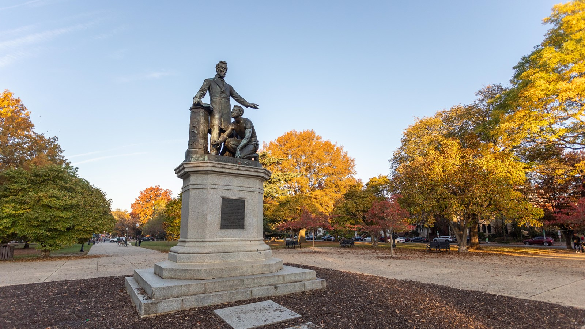

The Lincoln Emancipation Memorial is a monument erected to honor Abraham Lincoln's signing of the Emancipation Proclamation upon his death. In the statue, Abraham Lincoln is positioned physically above a naked, shackled, previously enslaved man who kneels at his feet, placing Lincoln in a saintlike position. The African American figure is modeled after Archer Alexander, the last person captured under the fugitive slave act; he did not consent to the original design. The original statue by Thomas Ball stands in Lincoln Park, DC; there is a copy of it that stood in Boston, however it was removed in 2020.
"We're pleased to have taken it down this morning," a spokesperson for Boston Mayor Marty Walsh said in a statement to NPR, noting that the decision followed two public hearings and a petition from artist Tory Bullock in which 12,000 people supported moving the statue.
There were plans to put it on display in a different context, but it has been 6 years and it still sits in storage. Proceeds for the statue were raised by formerly enslaved people/Black Union veterans.
Though the funds were provided by emancipated Black Americans, the designing/commissioning process was run by white members of the Western Sanitary Commission; Eliot chose final design for the monument without a second opinion from those who funded it in the first place. The statue has been criticized by many, including Frederick Douglass, since its dedication; it was thought of as regressive, diminutive, and infantilizing to Black Americans even upon its reveal.
Douglass called for "a monument representing the negro, not couchant on his knees like a four-footed animal, but erect on his feet like a man."
Many believe that this monument purposefully distorts history, given that Alexander was never freed by the Emancipation Proclamation (it also portrays Lincoln as the "great emancipator," a historically fraught term which I will expand upon in the final draft).
The debate over whether to preserve concentration camps as landmarks shows the tension between the necessity of historical truth and the difficulty of maintaining human dignity. While the risks of dark tourism, ranging from inappropriate behavior to the psychological toll on visitors, are significant, they are outweighed by the physical site's role as an irrefutable witness to history.
Ultimately, we believe that the preservation of these sites should not be seen as an attempt to fixate on the tragedies of the past, but as a commitment to the future to never let something like this happen again.